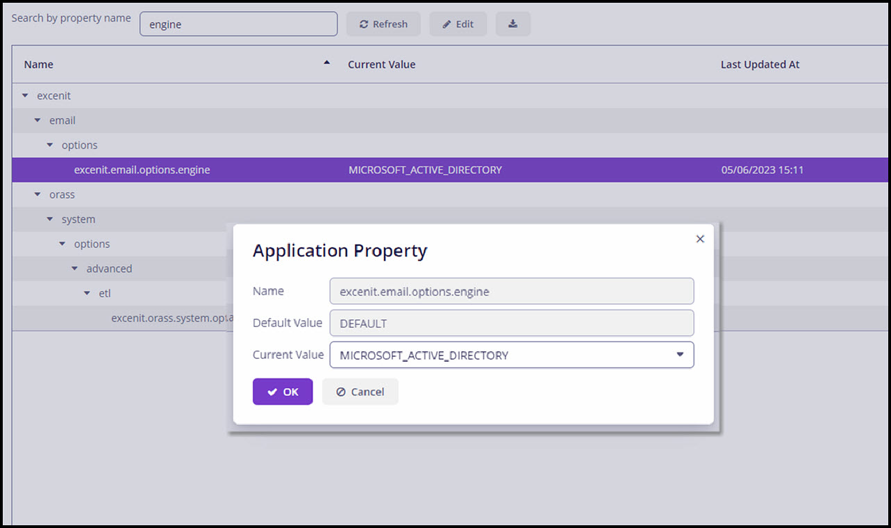
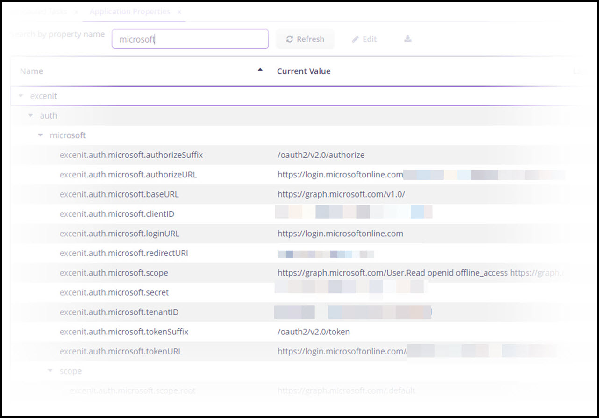
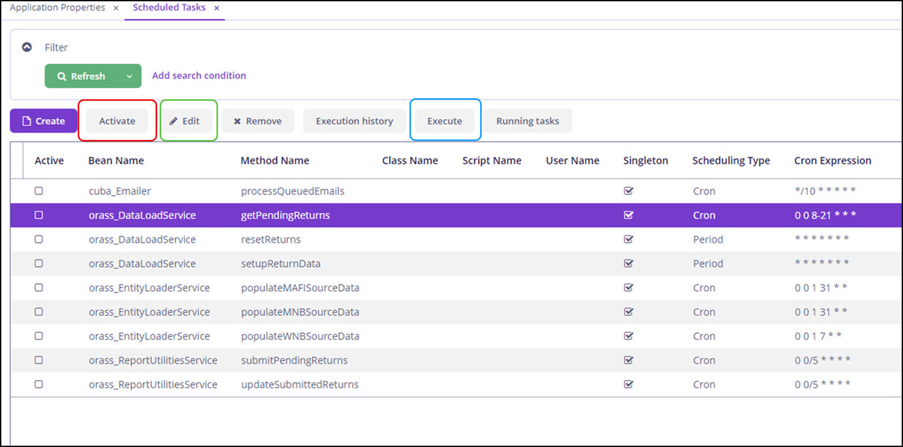
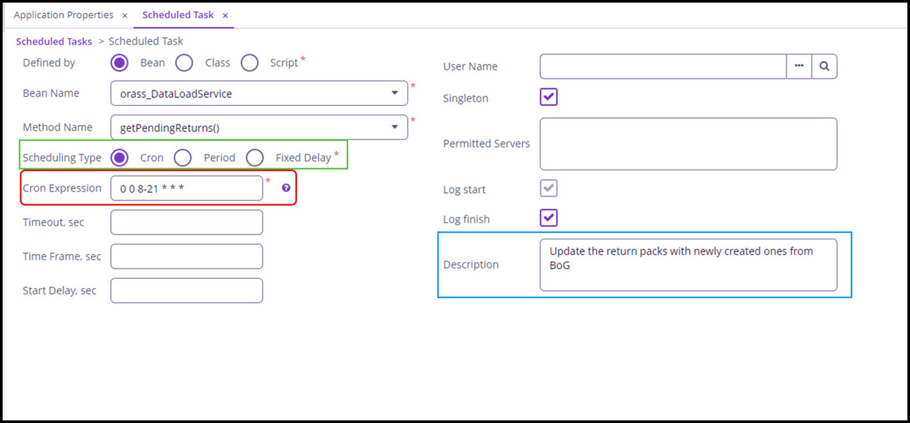

Setup & Configuration
Excenit RSS is highly configurable, which ensures that the system can meet different needs at different times. In addition, local administrators can make changes without calling in support.
Most configurations are located under the System menu, and they cover settings such as institution information, API credentials, email options, scheduled tasks, security including password complexity, auditing, report loading options, enable single-sign on with Azure AD integration, and many others.
|
Changes to the configuration parameters affect the entire system. Please ensure you have reviewed all materials on this page completely before making any changes. When in doubt, reach out to Excenit RSS support as support@excenit.com. |
Update Basic Configuration
Institution Information
During setup, you will provide information about your financial institution. These data are also available in the returns. If you don’t provide them, they will be populated using the first returns that are retrieved from BoG’s ORASS API.
To update the institution information, a user with the default orass-system-admin role (or equivalent) would follow the steps below:
-
Go to System in the menu bar to the left.
-
Click Application Properties to open the configuration page.
-
In the Search by property name field at the top of the page, type in
institution, which will show the list of options. -
Edit the three key fields as necessary. These should be obtained from the Bank of Ghana ORASS system.
API Configuration
Change the API credentials under the API authentication node on the Application Properties page.
Update the username and password with the machine id credentials from ORASS. Any other credential would not work.
To test that the credentials are working, go to the Scheduled Tasks menu and execute Get Pending Returns task. For more information on how to execute
tasks, see the Scheduled Tasks section below on this page.
Similarly, update the API url in the url node. This configuration is useful when BoG’s endpoint changes or returns need to be
submitted to the test system. The default values resolve to the production ORASS API.
Email System
Excenit RSS uses email to notify uses about various system events and statuses. There are two primary email systems:
-
Internal with RSS using Microsoft Exchange
-
SMTP configuration
By default, RSS uses orass@excenit.com, which is configured for Microsoft Exchange Online to manage all internal communications. However, this email system is controlled by Excenit and we strongly advice that you update the parameters in Azure if this is the preferred email system.
Only one email system can be used at any time.You must set the default email engine in Application Properties.The default system is Microsoft Exchange using the orass@excenit.com email address.
Microsoft Exchange
To use the Microsoft Exchange as the default email system:
-
Navigate the
engineproperty in theoptionsnode. -
Select MICROSOFT_ACTIVE_DIRECTORY in the
Current Valuefield and clickOKto save.  -
If you use the default configuration connect to orass@excenit.com, there is nothing else to do. However, if you need to use your organization’s Azure Active Directory, settings you need to configure additional settings in the next step.
-
Navigate to the
excenit→auth→microsoftnode and provide the configuration parameters for your organizations. These are advanced configurations , and they should match exactly what is available in Azure. 
Scheduled Tasks
Excenit RSS uses scheduled tasks to execute several tasks. Several tasks have been pre-configured to retrieve new and available returns from the ORASS API, submit new returns, check the status of submitted returns, load data from sources, including core banking application into the staging database/warehouse.
These tasks have been configured to run at specific intervals. These intervals can be changed. Familiarity with the Unix cron jobs system is assumed. Tasks can also be executed manually, and new tasks can be added. However, adding new tasks is a highly specialized function that the Excenit RSS support team will provide.
All pre-configured tasks are disabled by default. They must be activated to run at the specified times or intervals.
Executing Tasks
To execute a task, ensure it is activated. To activate a task, just select it and click the Activate button (in red box). Upon activation the Active box will be checked.
Once the task is active, it will run at the specified time/intervals. Default tasks use a cron expression to specify the run times. Periodic intervals can also be used
to execute tasks.
Tasks can also be executed immediately by clicking the Execute button (blue box).

To edit a task, click the Edit button (green box) to open the editor.

To edit the run times for a task, use the Cron Expression text box (red box) to input the cron command. Click the help icon for more help on how to write cron expressions.
You can also configure tasks to execute periodically (Period) or with a fixed delay (Fixed Delay) (green box). All three options yield the same results.
With the Period and Fixed Delay options, you must specify the period to execute the task in seconds.
Remember to save all changes and reactivate task after edits.
| Syntactically incorrect expressions might lead to unexpected results. Be sure to validate all new expressions or use the template provided. |
Edit pre-configured scheduled tasks with care. They might be inoperable without Excenit RSS support.
The next few sections describe some of the key pre-configured tasks that are necessary for the effective functioning of Excenit RSS.
New Returns
New returns from the ORASS API are managed by the getPendingReturns method. By default, it is scheduled to execute every day between 8 am and 9pm at the top of the hour.
To update the time, edit the task and specify a new time. This default configuration is sufficient for most financial institutions, but it can be changed based on the types of returns that need to be submitted.
When new returns are created the user with the orass-report-manager role will receive an email notification.
Submit Returns
When a return has been approved by the CFO (or the user assigned the orass-report-approver role) approves a return, this task, submitPendingReturns picks it up and submits to BoG through the ORASS API.
By default, it executes every five minutes. The task will notify both the assigned orass-report-approver and the orass-report-manager who prepared the return by email. The notification will
report the status of the submission as either Accepted by BoG or Rejected by BoG.
|
When a return status is Accepted by BoG it only means the transmission was successful and waiting review and approval by BoG. |
Update Return Status
After a return transmission has been accepted by the ORASS API, the updateSubmittedReturns task continuously checks with the ORASS API for a change in status.
When the status changes, the task will notify the approving orass-report-approver and the orass-report-manager. This task also executes every five minutes and can be
configured as necessary.
Reset Returns
The resetReturns task restores all returns to their original state and assumes that no return has been submitted.
| This task should be used sparingly, perhaps with Excenit RSS Support team to reset the system. Improper use can cause system instability. |
Data Loading
The populate{XXXXXX}SourceData tasks are used to load data from source into the staging environment. Like all other tasks, it can be configured to run at specific intervals.
| Be cautious when editing pre-configured tasks. They can have unexpected consequences, including non-submission of returns or retrieval of new returns. |